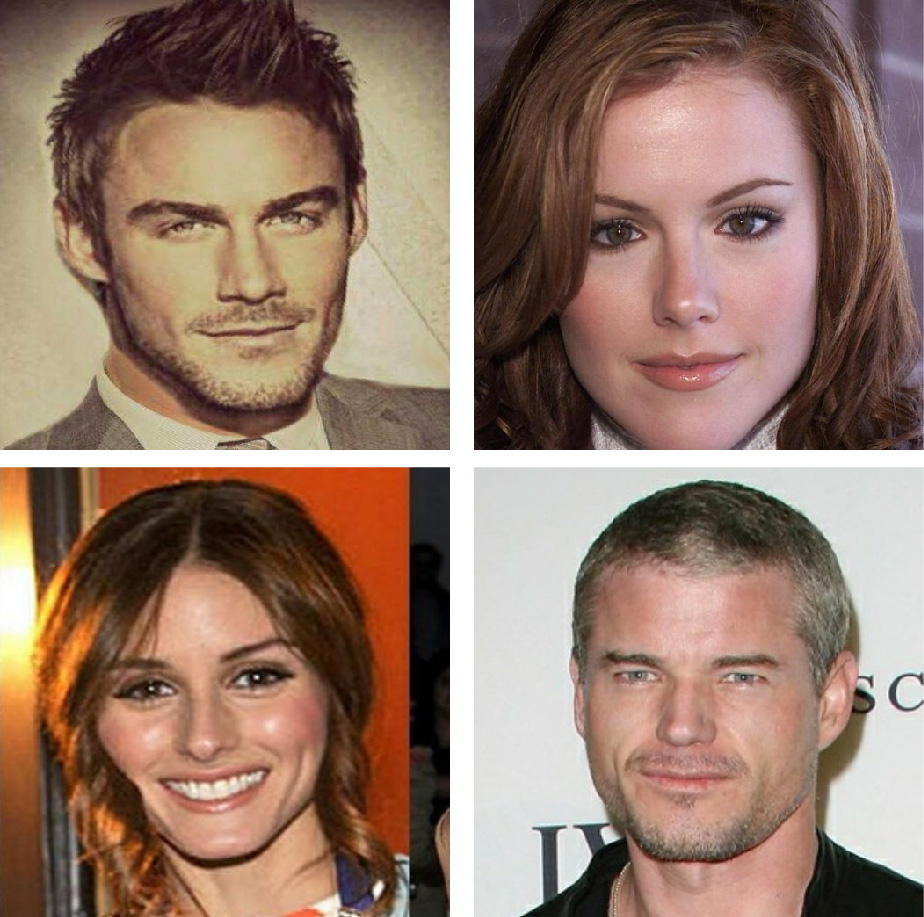
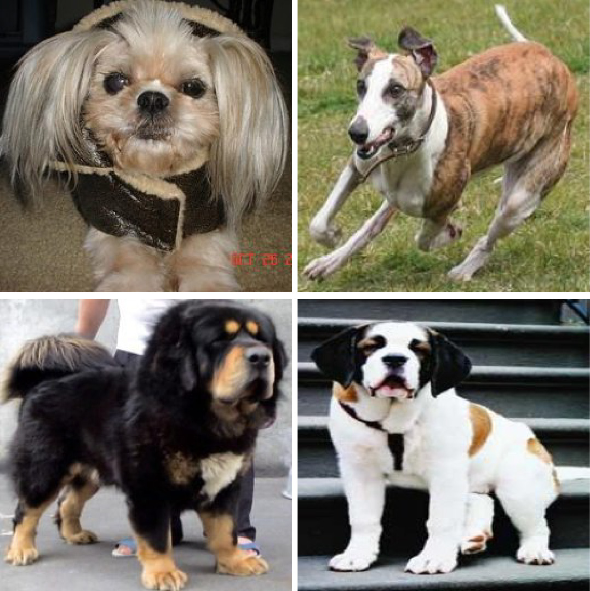

Sparse, Smart Contours to Represent and Edit Images
Supplementary Material
We show reconstruction results on "VGG-Faces", "Caltech-CUB" and "Stanford Dogs" datasets. For each of the datasets, we trained a new model and show 30 randomly sampled images from the test set. We also show results on CelebA where the model was trained on VGG dataset. For each image, we show our reconstruction using three types of features: gradients, color (RGB) and learned features (see Section 4 in the paper). For VGG and CUB datasets we show a comparison to Pix2Pix (trained using their implementaiton on our data). All results are on images from test sets.
 |
"VGG Faces" (256 x 256) Source: http://www.robots.ox.ac.uk/~vgg/data/vgg_face/ 30227 Training Images |
||
|  | "VGG Faces" (512 x 512) Source: http://www.robots.ox.ac.uk/~vgg/data/vgg_face/ 30227 Training Images |
||
"Caltech-CUB" 8855 Training images. Source: |
|||
|  | "Stanford Dogs" 12000 images. Source: http://vision.stanford.edu/aditya86/ImageNetDogs/ |
||
 |
"CelebA" Results on CelebA: |